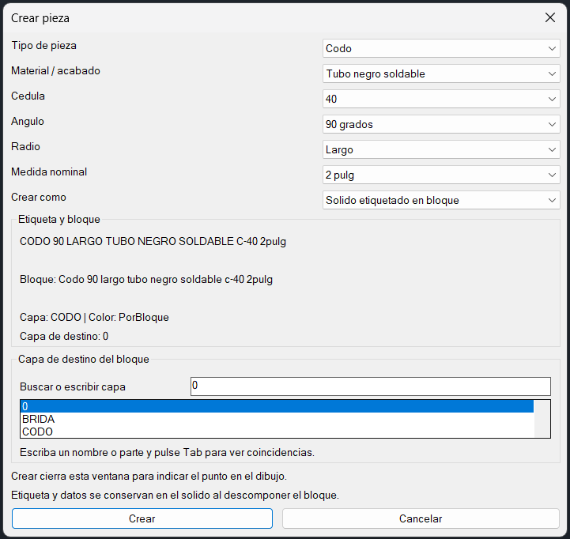

3D Modeling y AutoLISP
Piping Component Generation
I developed CREARPIEZA to configure a fitting and review its label, block name, and destination layer before placing it in the drawing. The 3D library shows the resulting components with their original AutoLISP labels.
